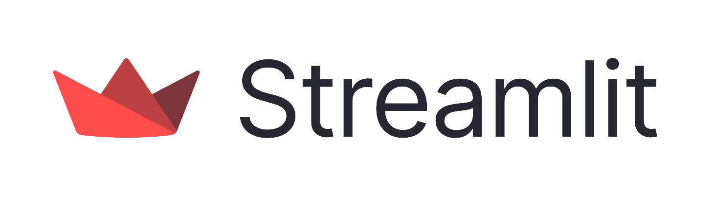

st.form
st.form 创建一个将内容组合起来的表单，并且带有一个 "Submit" 提交按钮。
通常情况下，当用户与组件交互的时候，Streamlit 应用就会重新运行一遍。
表单是是一个视觉上将元素和组件编组的容器，并且应当包含一个提交按钮。在此之中，用户可以与一个或多个组件进行任意次交互都不会触发重新运行。直到最后提交按钮被按下时，所有表单内组件的数值会一次性更新并传给 Streamlit。
你可以使用 with 语句来向表单对象添加内容（推荐），或者也可以将其作为一个对象直接调用其对象方法（即首先将表单组件存入一个变量，随后调用该变量的 Streamlit 方法）。可见样例应用。
表单有一些限制：
- 所有表单都应当包含一个
st.form_submit_button对象 st.button和st.download_button将无法在表单中使用- 表单能够出现在你应用的任何地方（包括侧边栏、列等等），唯独不能嵌入另一个表单之中
更多有关表单的信息，详见我们的 博客帖。
示例应用
代码
以下展示了如何使用 st.form：
import streamlit as st st.title('st.form') # Full example of using the with notation st.header('1. Example of using `with` notation') st.subheader('Coffee machine') with st.form('my_form'): st.subheader('**Order your coffee**') # Input widgets coffee_bean_val = st.selectbox('Coffee bean', ['Arabica', 'Robusta']) coffee_roast_val = st.selectbox('Coffee roast', ['Light', 'Medium', 'Dark']) brewing_val = st.selectbox('Brewing method', ['Aeropress', 'Drip', 'French press', 'Moka pot', 'Siphon']) serving_type_val = st.selectbox('Serving format', ['Hot', 'Iced', 'Frappe']) milk_val = st.select_slider('Milk intensity', ['None', 'Low', 'Medium', 'High']) owncup_val = st.checkbox('Bring own cup') # Every form must have a submit button submitted = st.form_submit_button('Submit') if submitted: st.markdown(f''' ☕ You have ordered: - Coffee bean: `{coffee_bean_val}` - Coffee roast: `{coffee_roast_val}` - Brewing: `{brewing_val}` - Serving type: `{serving_type_val}` - Milk: `{milk_val}` - Bring own cup: `{owncup_val}` ''') else: st.write('☝️ Place your order!') # Short example of using an object notation st.header('2. Example of object notation') form = st.form('my_form_2') selected_val = form.slider('Select a value') form.form_submit_button('Submit') st.write('Selected value: ', selected_val)
逐行解释
创建 Streamlit 应用时要做的第一件事就是将 streamlit 库导入为 st：
import streamlit as st
紧跟着的是为应用创建一个标题：
st.title('st.form')
第一个样例
让我们从第一个样例开始，这里我们使用 with 写法调用 st.form。在这个表单中，我们首先添加一个次级标题 Order your coffee，然后创建了几个输入组件（st.selectbox、st.select_slider 以及 st.checkbox）来收集有关咖啡订单的信息。最后使用 st.form_submit_button 添加一个提交按钮，当点击这个提交按钮时，所有用户输入将一次性传给应用来做处理。
# Full example of using the with notation st.header('1. Example of using `with` notation') st.subheader('Coffee machine') with st.form('my_form'): st.subheader('**Order your coffee**') # Input widgets coffee_bean_val = st.selectbox('Coffee bean', ['Arabica', 'Robusta']) coffee_roast_val = st.selectbox('Coffee roast', ['Light', 'Medium', 'Dark']) brewing_val = st.selectbox('Brewing method', ['Aeropress', 'Drip', 'French press', 'Moka pot', 'Siphon']) serving_type_val = st.selectbox('Serving format', ['Hot', 'Iced', 'Frappe']) milk_val = st.select_slider('Milk intensity', ['None', 'Low', 'Medium', 'High']) owncup_val = st.checkbox('Bring own cup') # Every form must have a submit button. submitted = st.form_submit_button('Submit')
接下来我们添加上在表单提交之后的处理逻辑。默认情况下，Streamlit 应用在加载后会执行 else 语句中的内容，此时我们可以看到一条消息显示 ☝️ Place your order!。而当按下提交按钮的时候，所有用户在表单中各种组件处提供的输入会被存入几个变量（比如 coffee_bean_val 和 coffee_roast_val 等等），然后使用 st.markdown 和 f-字符串进行显示。
if submitted: st.markdown(f''' ☕ You have ordered: - Coffee bean: `{coffee_bean_val}` - Coffee roast: `{coffee_roast_val}` - Brewing: `{brewing_val}` - Serving type: `{serving_type_val}` - Milk: `{milk_val}` - Bring own cup: `{owncup_val}` ''') else: st.write('☝️ Place your order!')
第二个样例
接下来让我们看看第二个例子，我们将以对象的形式使用 st.form。这里 st.form 命令的结果将被赋值给 form 变量。此后将通过 form 变量调用各种 Streamlit 命令，比如 slider 或 form_submit_button。
# Short example of using an object notation st.header('2. Example of object notation') form = st.form('my_form_2') selected_val = form.slider('Select a value') form.form_submit_button('Submit') st.write('Selected value: ', selected_val)